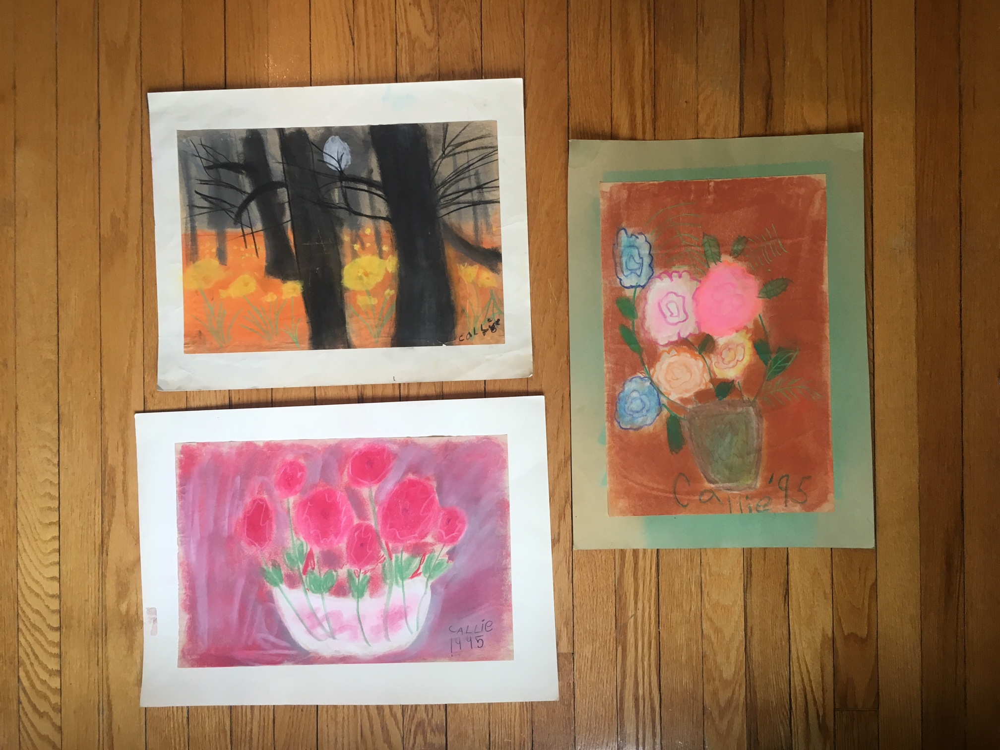
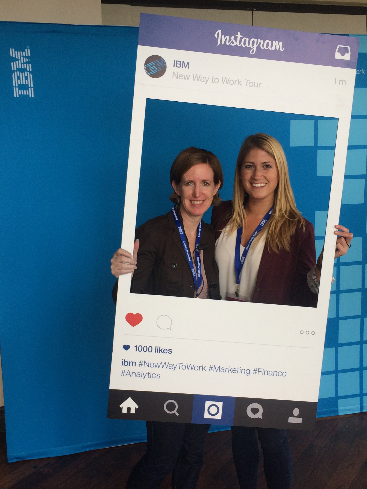

with floral still life and landscape drawings that would put my 28 year old self to shame today. Putting pencil, colored markers or paint to paper came naturally to me as a kid. I don’t know what exactly changed in the years in between then and now, but I stopped creating.
I had all types of roles, from project managing major client events to leading digital ad campaigns. Sometime during college I bought into the idea that getting a typical business job would be a good career path. Which is why I entered into IBM and continued in marketing for so long. But the piece of me that is the child drawing and creating has always had me wanting to step away from the computer, stop talking about marketing strategies, and to sketch and iterate on design ideas.
I had all types of roles, from project managing major client events to leading digital ad campaigns. Sometime during college I bought into the idea that getting a typical business job would be a good career path. Which is why I entered into IBM and continued in marketing for so long. But the piece of me that is the child drawing and creating has always had me wanting to step away from the computer, stop talking about marketing strategies, and to sketch and iterate on design ideas.
What these two projects had in common was the fact that they required me to work alongside the design team at IBM, building A/B tests for websites to create stronger user experiences and increase overall conversion rates. I was putting pen to paper again and was truly focused on a client centered approach to my work. Working on these projects made it clear to me that building designs, understanding how and why people react to online experiences, and refining these experiences is where my passion lies.
As project manager and digital lead on an IBM event series
During this time, I thought regularly about my passions and which step I wanted to take next. Returning to the states and going back to another marketing job, although an option, was not one I was willing to take. It was time to take all of the skills I had acquired in digital marketing and jump head first into a design career. Through my education in UX and UI design with Bloc, inc. and the creation of several design projects, I am ready for my next design challenge.
Reine, Norway during my solo trip in 2017